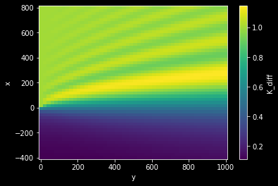

Ecuación de la Difracción Oblicua¶
En este notebook se va a abordar el problema de la Difracción Oblicua, dónde se calcularán los coeficientes de difracción en una zona de sombra que alberga un dique.
A partir de una demostración que puede consultarse en la referencia, Penney y Price (1952) obtuvieron una solución en polares para el coeficiente de difracción tal que:
\[
K_d = \left | I\left ( -\sqrt{\frac{4kr}{\pi}}\sin \frac{\alpha -\theta}{2}e^{-ikr\cos\left ( \alpha-\theta \right )} \right ) + I\left ( -\sqrt{\frac{4kr}{\pi}}\sin \frac{\alpha +\theta}{2}e^{-ikr\cos\left ( \alpha+\theta \right )} \right ) \right |
\]
dónde
\[
I(\lambda)=\frac{1+C(\lambda)+S(\lambda)}{2}+i\frac{C(\lambda)-S(\lambda)}{2}
\]
y \(C(\lambda)\) y \(S(\lambda)\) son las integrales de Fresnel definidas como:
\[
C(\lambda)=\int_{0}^{\lambda}\cos\frac{\pi\lambda^2}{2}d\lambda \qquad S(\lambda)=\int_{0}^{\lambda}\sin\frac{\pi\lambda^2}{2}d\lambda
\]
Importamos las librerías necesarias¶
import warnings
warnings.filterwarnings("ignore")
# import maths
import os
import os.path as op
import sys
# arrays
import numpy as np
import xarray as xr
from sympy import *
# import matplotlib
import matplotlib
import matplotlib.pyplot as plt
from matplotlib.animation import FuncAnimation
import plotly.graph_objects as go
import plotly.io as pio
pio.renderers.default = 'iframe_connected'
from IPython.display import HTML # diplay anim
matplotlib.rcParams['animation.embed_limit'] = 2**32
plt.style.use('dark_background')
sys.path.insert(0, os.path.join(os.getcwd() , '..', '..', '..'))
# dependencies
if(os.path.isdir('waves-main')): #thebe
os.chdir('waves-main')
from lib.analitic import *
if(os.path.isdir('data')):
p_data = op.abspath(op.join(os.getcwd(), 'data')) # thebe
else:
p_data = op.abspath(op.join(os.getcwd(),'..', '..', '..', 'data')) # notebook
definimos las ecuaciones / variables¶
# load all the symbols
k, r, pi, alpha, theta = symbols('k r pi alpha theta')
lambdaa = symbols('lambda')
# we first define the K_d function
K_d = Function('K_d')(k,r,alpha,theta)
# but also other important functions
C = Function('C')(lambdaa)
C = integrate(cos(pi*lambdaa**2/2),(lambdaa,0,lambdaa))
S = Function('S')(lambdaa)
S = integrate(sin(pi*lambdaa**2/2),(lambdaa,0,lambdaa))
I_l = Function('I')(lambdaa)
I_l = (1+C+S)/2 + I*(C-S)/2
K_d
\[\displaystyle \operatorname{K_{d}}{\left(k,r,\alpha,\theta \right)}\]
I_l
\[\displaystyle \frac{i \left(\frac{\sqrt{\pi} C\left(\frac{\lambda \sqrt{\pi}}{\sqrt{\pi}}\right) \Gamma\left(\frac{1}{4}\right)}{4 \sqrt{\pi} \Gamma\left(\frac{5}{4}\right)} - \frac{3 \sqrt{\pi} S\left(\frac{\lambda \sqrt{\pi}}{\sqrt{\pi}}\right) \Gamma\left(\frac{3}{4}\right)}{4 \sqrt{\pi} \Gamma\left(\frac{7}{4}\right)}\right)}{2} + \frac{1}{2} + \frac{\sqrt{\pi} C\left(\frac{\lambda \sqrt{\pi}}{\sqrt{\pi}}\right) \Gamma\left(\frac{1}{4}\right)}{8 \sqrt{\pi} \Gamma\left(\frac{5}{4}\right)} + \frac{3 \sqrt{\pi} S\left(\frac{\lambda \sqrt{\pi}}{\sqrt{\pi}}\right) \Gamma\left(\frac{3}{4}\right)}{8 \sqrt{\pi} \Gamma\left(\frac{7}{4}\right)}\]
C
\[\displaystyle \frac{\sqrt{\pi} C\left(\frac{\lambda \sqrt{\pi}}{\sqrt{\pi}}\right) \Gamma\left(\frac{1}{4}\right)}{4 \sqrt{\pi} \Gamma\left(\frac{5}{4}\right)}\]
S
\[\displaystyle \frac{3 \sqrt{\pi} S\left(\frac{\lambda \sqrt{\pi}}{\sqrt{\pi}}\right) \Gamma\left(\frac{3}{4}\right)}{4 \sqrt{\pi} \Gamma\left(\frac{7}{4}\right)}\]
K_d = abs(I_l.subs(lambdaa,-sqrt(4*k*r/pi)*sin((alpha-theta)/2))*exp(-I*k*r*cos(alpha-theta)) + \
I_l.subs(lambdaa,-sqrt(4*k*r/pi)*sin((alpha+theta)/2))*exp(-I*k*r*cos(alpha+theta)))
K_d
\[\displaystyle \left|{\left(\frac{i \left(- \frac{\sqrt{\pi} C\left(\frac{2 \sqrt{\pi} \sqrt{\frac{k r}{\pi}} \sin{\left(\frac{\alpha}{2} - \frac{\theta}{2} \right)}}{\sqrt{\pi}}\right) \Gamma\left(\frac{1}{4}\right)}{4 \sqrt{\pi} \Gamma\left(\frac{5}{4}\right)} + \frac{3 \sqrt{\pi} S\left(\frac{2 \sqrt{\pi} \sqrt{\frac{k r}{\pi}} \sin{\left(\frac{\alpha}{2} - \frac{\theta}{2} \right)}}{\sqrt{\pi}}\right) \Gamma\left(\frac{3}{4}\right)}{4 \sqrt{\pi} \Gamma\left(\frac{7}{4}\right)}\right)}{2} + \frac{1}{2} - \frac{\sqrt{\pi} C\left(\frac{2 \sqrt{\pi} \sqrt{\frac{k r}{\pi}} \sin{\left(\frac{\alpha}{2} - \frac{\theta}{2} \right)}}{\sqrt{\pi}}\right) \Gamma\left(\frac{1}{4}\right)}{8 \sqrt{\pi} \Gamma\left(\frac{5}{4}\right)} - \frac{3 \sqrt{\pi} S\left(\frac{2 \sqrt{\pi} \sqrt{\frac{k r}{\pi}} \sin{\left(\frac{\alpha}{2} - \frac{\theta}{2} \right)}}{\sqrt{\pi}}\right) \Gamma\left(\frac{3}{4}\right)}{8 \sqrt{\pi} \Gamma\left(\frac{7}{4}\right)}\right) e^{- i k r \cos{\left(\alpha - \theta \right)}} + \left(\frac{i \left(- \frac{\sqrt{\pi} C\left(\frac{2 \sqrt{\pi} \sqrt{\frac{k r}{\pi}} \sin{\left(\frac{\alpha}{2} + \frac{\theta}{2} \right)}}{\sqrt{\pi}}\right) \Gamma\left(\frac{1}{4}\right)}{4 \sqrt{\pi} \Gamma\left(\frac{5}{4}\right)} + \frac{3 \sqrt{\pi} S\left(\frac{2 \sqrt{\pi} \sqrt{\frac{k r}{\pi}} \sin{\left(\frac{\alpha}{2} + \frac{\theta}{2} \right)}}{\sqrt{\pi}}\right) \Gamma\left(\frac{3}{4}\right)}{4 \sqrt{\pi} \Gamma\left(\frac{7}{4}\right)}\right)}{2} + \frac{1}{2} - \frac{\sqrt{\pi} C\left(\frac{2 \sqrt{\pi} \sqrt{\frac{k r}{\pi}} \sin{\left(\frac{\alpha}{2} + \frac{\theta}{2} \right)}}{\sqrt{\pi}}\right) \Gamma\left(\frac{1}{4}\right)}{8 \sqrt{\pi} \Gamma\left(\frac{5}{4}\right)} - \frac{3 \sqrt{\pi} S\left(\frac{2 \sqrt{\pi} \sqrt{\frac{k r}{\pi}} \sin{\left(\frac{\alpha}{2} + \frac{\theta}{2} \right)}}{\sqrt{\pi}}\right) \Gamma\left(\frac{3}{4}\right)}{8 \sqrt{\pi} \Gamma\left(\frac{7}{4}\right)}\right) e^{- i k r \cos{\left(\alpha + \theta \right)}}}\right|\]
definir coordenadas y parámetros¶
# define polar coordinates
from sympy.abc import x, y
r = sqrt(x**2+y**2) # these are the polar coordinates
alpha = np.pi/2 - atan(x/y)
# fixed parameters for the wave
g_value = 9.8 # m / s^2
T_value = 8 # seconds
w_value = 2*np.pi/T_value
h_value = 5 # depth (meters)
# derived parameters for the wave
k_value = w_value**2/g_value
# waves.Waves(h_value,T=T_value).k # wave number
l_value = 2*np.pi/k_value
# get diffraction coefficients for (x,y)
x_range_nodes = (-400,800,50)
y_range_nodes = (1,1000,50)
k_diff = np.zeros((x_range_nodes[2],y_range_nodes[2]))
for i,xs in enumerate(np.linspace(*x_range_nodes)):
for j,ys in enumerate(np.linspace(*y_range_nodes)):
print(f'Calculating K_diff in ({xs},{ys}) -- in meters', end='\r')
k_diff[i,j] = float(
K_d.evalf(subs={
'k':k_value,'theta':np.pi/2,'pi':np.pi,
'r':r.evalf(subs={'x':xs,'y':ys}),
'alpha': alpha.evalf(subs={'x':xs,'y':ys}),
})
)
xr.Dataset(
{'K_diff':(('x','y'),k_diff)},
coords={'x':np.linspace(*x_range_nodes),
'y':np.linspace(*y_range_nodes)}
).K_diff.to_netcdf(op.join(p_data, 'diff_coeffs_test.nc'))
Calculating K_diff in (800.0,1000.0) -- in meters- in meterss- in meterssss
xr.open_dataarray(op.join(p_data, 'diff_coeffs_test.nc')).plot()
plt.show()

fig = go.Figure(data=[
go.Surface(
z=xr.open_dataarray(op.join(p_data, 'diff_coeffs_test.nc')).to_dataframe().values.reshape(50,50).T,
colorscale='jet',cmin=0.2,cmax=1.3
),
go.Surface(
z=np.ones((50,50)),showscale=False,colorscale='earth',opacity=0.6
)
])
fig.show()